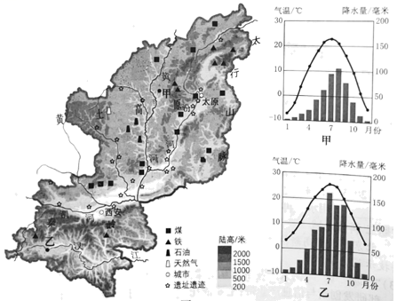
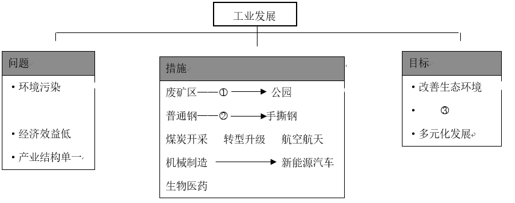
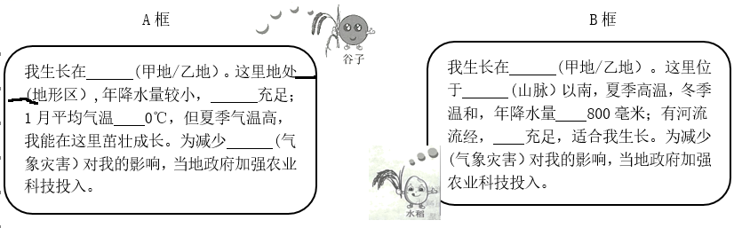

2023年北京中考地理 第27题
27. 陕西省和山西省是我国传统农业和能源大省，近年来两省积极探索高质量发展之路。图为陕西省和山西省简图及甲、乙两地气温曲线和降水量柱状图。阅读图文资料，回答下列问题。
两省在发展工业的过程中，注重生态环境建设，如通过园林绿化等，将部分废矿区变身为绿树环绕的公园；加大科研力度，如研制出可应用于折叠屏手机的“手撕钢”；积极推动多元化发展，如发展航空航天等高新技术产业。

（1）陕西省简称____，山西省行政中心是____。两省有丰富的____、石油、天然气等能源矿产，正努力实现传统能源工业转型升级。根据资料，将“环境治理”“提高经济效益”“技术研发“填入框图中相应的位置。

① ________②________③________
谷子喜光照，耐寒、耐旱、耐贫瘠，去壳后称小米，主要供食用。水稻喜温，耐湿、耐热，生长期间需要较多的水分，稻谷去壳后称大米，主要做粮食，也可酿酒。
（2）根据资料，结合图中甲、乙两地的自然条件，在A框、B框中选择其一作答。

A框： 我生长在_____，属于_____地形区，年降水量较小, _____充足，1月平均气温_____0℃，但夏季气温高，我能在这里茁壮成长，为减少_____对我的影响，当地政府加强农业和科技投入。
B框：我国生长在_____，这里位于_____以南，夏季高温，冬季温和，年降水量_____800毫米，有河流流经，_____充足，适合我生长。为了减少_____对我的影响，当地政府加强农业和科技投入。
（3）有人说，陕西省和山西省应将旅游业作为重点发展方向。结合实例，联系所学简要说明你的观点。